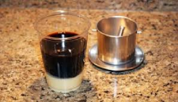

.png)
.png)
Trung Nguyen coffee is most famous for its strong taste and aroma. It is the leading local brand in Vietnam and a
big exporter-you can find Trung Nguyen coffee in over 70 countries in the wold. There is a range of
products diverse in the mix of coffee beans and processing methods.
Trung Nguyen coffee has 3 main types, instant coffee, roasted coffee and distinctive(weasel) one.

Focusing more on the side, Vina Cafe is among the best choices for instant blended coffee. This brand is
most famous for its creamy, hazelnutty flavor for those with a sweet tooth. Vina Cafe has been the coffee our
childhood and still most common among Vietnamese housecholds. The most popilar ones are VinaCafe 3-in-1,
Wake-up Cafe with Weasel Flavor.
NESCAFE-the famous worldwide brand, comes with a lot of choices for the discerning market of Vietnam coffee
connoisseurs. Among their products, instants ones are top of mind.Their blemded coffee comes in different levels
of strong tastes that can be no less delicious than their groind coffee counterparts. Their NESCAFE cans
Mocha/Latte are a good choice when you want just a pack of ready-made goodness.